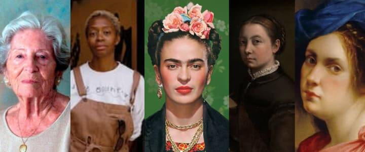

Reconocer, reflexionar y transformar nuestras acciones para construir espacios escolares libres de discriminación, violencia y estereotipos.
Conoce nuestro proyecto ↓Una iniciativa para aprender, cuestionar y transformar nuestra comunidad.
Promover en las y los estudiantes del Gimnasio Marroquín Campestre (GMC) la reflexión crítica sobre la equidad de género, reconociendo la importancia del respeto, la equidad de derechos y la eliminación de estereotipos y formas de discriminación en su entorno escolar y social, mediante una página web que contiene actividades de concientización. Basado en el objetivo de desarrollo sostenible 5: Igualdad de género.
Diferentes áreas del conocimiento se unen para comprender la equidad de género desde una perspectiva crítica, científica, social y cultural.
Un recorrido por la historia de las mujeres, sus luchas y los derechos conquistados a través del tiempo.
Explorar módulo →La literatura como herramienta de expresión, pensamiento crítico y transformación social.
Explorar módulo →Reconocer las violencias de género y descubrir cómo el arte puede contribuir a combatirlas.
Explorar módulo →Los datos y las estadísticas como herramientas para comprender las violencias de género en nuestra comunidad.
Explorar módulo →Comprender los procesos hormonales, la salud sexual y reproductiva y la corresponsabilidad.
Explorar módulo →La palabra como herramienta de transformación.
La literatura ha sido un espacio de expresión, denuncia y transformación social. A través de novelas, poemas, ensayos, investigaciones científicas y otras formas de escritura, numerosas mujeres han cuestionado las desigualdades, los estereotipos y las estructuras sociales que históricamente han limitado sus oportunidades. En este módulo conoceremos escritoras que han utilizado la palabra para defender los derechos de las mujeres, expresar sus experiencias y proponer nuevas maneras de comprender la sociedad.
El arte como expresión, conciencia y transformación.
Las violencias basadas en género pueden afectar a todas las personas de diferentes maneras, independientemente de su sexo o identidad de género. Estas manifestaciones pueden presentarse mediante agresiones físicas, psicológicas, sexuales, económicas, simbólicas y digitales. Reconocerlas es el primer paso para prevenirlas y construir entornos seguros. El arte, el cine, la música y las herramientas tecnológicas permiten visibilizar estas problemáticas, generar empatía y promover cambios en nuestras formas de relacionarnos.

Los datos también cuentan historias.
Las matemáticas nos permiten analizar la realidad mediante datos, porcentajes, gráficas y herramientas estadísticas. Las violencias basadas en género no son únicamente situaciones individuales: también pueden convertirse en problemáticas colectivas que afectan la convivencia y la seguridad de las comunidades. Por medio de una encuesta dirigida a la comunidad del Gimnasio Marroquín Campestre, buscaremos conocer qué tanto identifican sus integrantes las violencias de género y cuáles son sus experiencias y percepciones frente a estas situaciones.
Cuerpo humano, sexualidad y corresponsabilidad.
Comprender el cuerpo humano y sus procesos biológicos es fundamental para promover una educación sexual integral basada en el conocimiento, el respeto y la toma de decisiones responsables. Las hormonas participan en diferentes procesos fisiológicos tanto en hombres como en mujeres, generando cambios durante las distintas etapas de la vida. Asimismo, conocer la historia de la salud sexual y reproductiva permite reconocer las luchas por la autonomía corporal y reflexionar sobre la importancia de compartir las responsabilidades relacionadas con la planificación y el cuidado.
Construir una sociedad equitativa es una responsabilidad compartida. Reconocer las diferencias, respetar los derechos, cuestionar los estereotipos y rechazar cualquier forma de violencia son acciones que comienzan en nuestros espacios cotidianos. Desde el Gimnasio Marroquín Campestre queremos promover una comunidad en la que todas las personas puedan aprender, participar y desarrollarse en condiciones de respeto, dignidad e igualdad. Realiza la siguiente encuesta para evaluar nuestro proyecto STEAM:Encuesta proyecto STEAM
01. Ciencias Sociales
Historia, derechos y transformación social.
A lo largo de la historia, las mujeres han desempeñado un papel fundamental en la construcción de las sociedades. Sin embargo, durante siglos enfrentaron restricciones para acceder a la educación, participar en la política, ejercer determinados trabajos y tomar decisiones sobre sus propias vidas. Gracias a diferentes movimientos sociales y luchas colectivas, se han conquistado derechos que han transformado el mundo. En este módulo exploraremos esos acontecimientos y reconoceremos cómo han evolucionado los derechos de las mujeres en Latinoamérica y en otras regiones del planeta.
🔎 Actividad: Una historia de conquistas